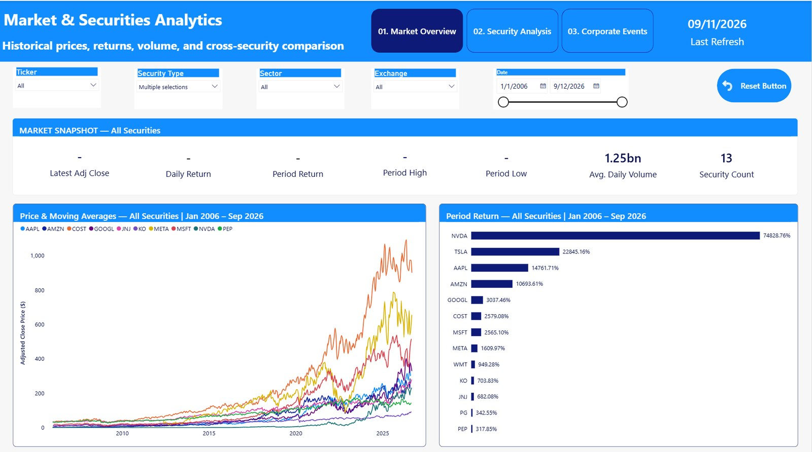
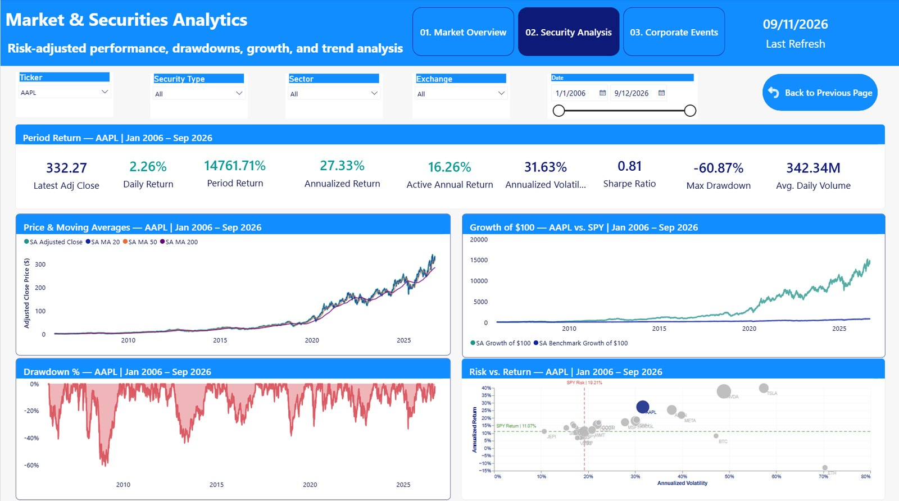
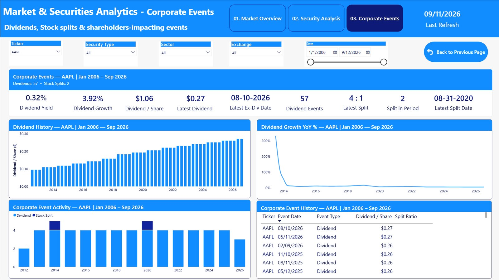

A raw return tells you almost nothing on its own — a security up 500% could have taken a far riskier path than one up 200%. This platform turns two decades of public market data on 13 securities into a single analytical model that pairs return with risk, benchmark context and corporate actions, so performance can be judged properly instead of at face value.
The project combines financial domain knowledge, data preparation, analytical modeling and interactive business intelligence into a single investment analytics workflow.
Every investor eventually asks the same question: which holdings are actually earning their risk? A headline return doesn't answer that — it can't distinguish a steady compounder from a security that got lucky on a volatile ride. Answering it properly requires pairing return with volatility, drawdown and benchmark context, at the same time, for every security in the portfolio.
This project builds that analytical scaffolding from scratch: two decades of public price, volume and corporate-event history for 13 securities spanning equities, ETFs and crypto, modeled into a single Power BI environment where performance, risk and benchmark comparisons update together as a user filters, rather than living in separate spreadsheets that never quite agree.
Historical prices, returns, growth and benchmark-relative performance.
Volatility, drawdown, beta and risk-adjusted performance analysis.
Security performance evaluated relative to benchmark and market measures.
Dividend history, dividend growth, stock splits and event analysis.
A walkthrough of the Power BI dashboard demonstrating the analytical workflow across market performance, security analysis and corporate events.

Live report pageHistorical prices, returns, trading volume and cross-security performance comparison with dynamic filters.

Live report pageSecurity-level performance and risk analysis designed to support deeper evaluation of individual securities.

Live report pageDividend activity, stock splits and corporate-event information integrated into the analytical workflow.
Pulled directly from the live report — a sample of what pairing return with risk, benchmark and corporate-action context actually reveals once the filters come off.
NVIDIA's total return over the full period is roughly 96x the benchmark's gain across the same window — a gap that's easy to lose sight of on a raw price chart, which is why every security in this model carries a benchmark-relative measure alongside its own return.
A strong headline return and a brutal drawdown can both be true for the same security in the same window. The Security Analysis page pairs return with volatility and drawdown by design, so performance can't be judged on the upside alone.
A sector-concentrated semiconductor ETF outgained a dividend-focused, diversified one by more than 6x over the same 20 years — a real trade-off between growth and income that the dashboard lets a user compare side by side, not just assert.
Total shareholder return is more than price appreciation — AAPL's history includes a 4-for-1 split and 3.92% year-over-year dividend growth, both tracked explicitly rather than folded invisibly into a single price line.
The solution connects public market data with transformation, modeling, analytical calculations and interactive visualization.
The project follows a structured analytics development process designed to maintain data quality, analytical consistency and usability.
Collect public historical market and corporate-event data.
Clean, transform and structure the data for analytical use.
Build an analytical model supporting flexible filtering and calculations.
Develop DAX measures for performance, risk and benchmark analysis.
Design interactive Power BI views and custom visualizations.
The project combines financial analytics with modern business intelligence and data engineering techniques.
Building the dashboard involved more than visualization. The project required solving practical data, modeling and user-experience challenges — three of them are worth calling out specifically.
The model spans equities and ETFs, which trade on a weekday market calendar, alongside BTC and ETH, which trade every day of the year — a naive daily-return calculation would misalign dates or silently distort volume and volatility comparisons across asset classes.
Time-intelligence measures were built to normalize across trading calendars before computing returns, volatility and benchmark deltas — so a crypto asset and an equity ETF can sit on the same comparison chart without the comparison being misleading.
A raw return ranking (page 01) and a risk-adjusted view — Sharpe ratio, annualized volatility, maximum drawdown (page 02) — can rank the same securities in a different order. Rather than pick one framing, the dashboard keeps both visible side by side and lets the user reconcile them.
The Investment Analytics Platform demonstrates how public market data can be transformed into a structured, interactive analytical product — one that answers a genuine investing question (which holdings are earning their risk?) rather than just displaying numbers. The project brings together financial knowledge, data preparation, analytical modeling, DAX, visualization and business intelligence into a single workflow.